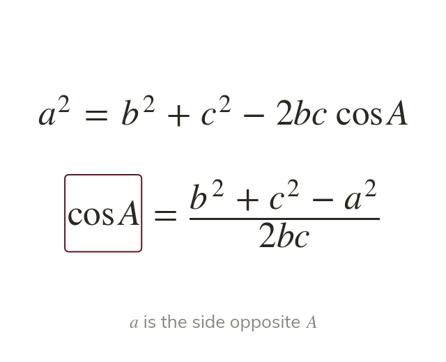
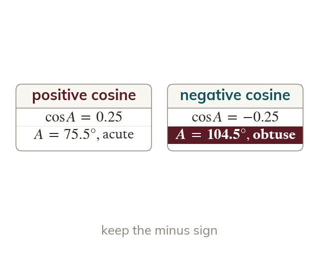
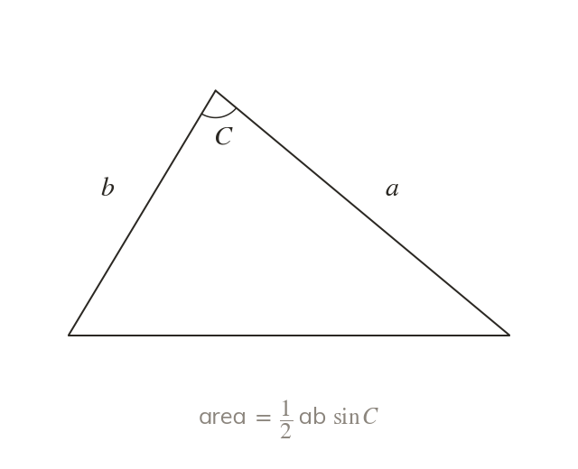
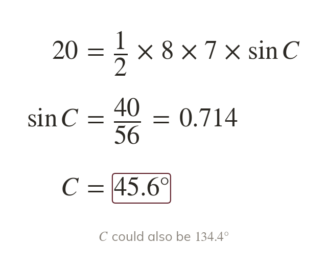

Rearrange for the angle
The cosine rule rearranges to find an angle from three sides. The side opposite the angle is the one subtracted.
A triangular plot of land is often measured by its three sides, or by two sides and an angle. Today we find an angle from three sides, and the area of any triangle without its height.
Work down the page at your own pace. Write every answer in your book first, then click to check it.
Read each card, then follow the worked examples one step at a time.

The cosine rule rearranges to find an angle from three sides. The side opposite the angle is the one subtracted.

A negative cosine is not a mistake. It means the angle is obtuse, and the inverse cosine gives it directly.
Pick an answer. If it's wrong, the feedback tells you which mistake it was.
Read each card, then follow the worked examples one step at a time.

The area of any triangle is half of ab . The angle must sit between sides a and

Substitute the known area and solve for the missing value. An angle found this way could also be minus it.
Pick an answer. If it's wrong, the feedback tells you which mistake it was.
Finished? Next lesson: 11H.2.6 Combining the Trigonometry Rules.
For each skill, tap the one that is true for you today. Your Revise pages start with anything you mark Not yet.
Your ratings are saved on this device only.
Log in, then search for a code to practise that skill.
Videos, worksheets and more on each part of this lesson.